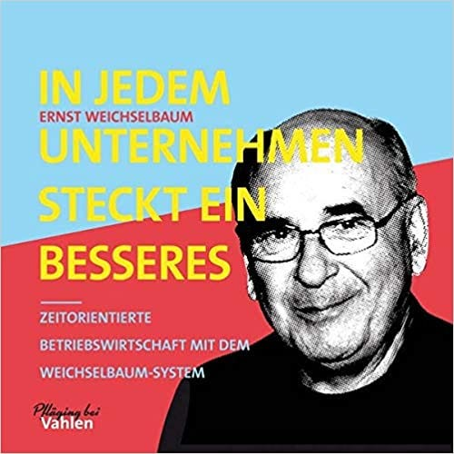

Gestalten statt Analysieren
“Jede Analyse des Bisherigen ist überflüssig.”
Dieser Satz von Ernst Weichselbaum hat mich sofort gebannt. Gelesen habe ich ihn zuerst nur aus den Augenwinkeln in meinem Feed bei LinkedIn. Doch dann habe ich genauer hingeschaut. Er stammt aus seinem Buch “In jedem Unternehmen steck ein besseres”.

Gebannt hat mich der Satz, weil er mit “überflüssig” signalisiert, dass hier etwas weggelassen, gespart, flüssiger gemacht werden kann; das finde ich immer spannend. Andererseits steht das aber im Zusammenhang mit einer Tätigkeit, die ich eigentlich wichtig finde: Analyse.
Wie kann das sein? Wie geht das zusammen?
Die weitere Erklärung hat dann aber für mich absolut Sinn gemacht. Den möchte ich Ihnen nicht vorenthalten.
Analyse ist positiv besetzt. Es ist doch auch ganz naheliegend, dass man angesichts von Problemen zunächst genau hinschaut und herausfindet, was ist und was mögliche Erklärungsursachen dafür sind. In der Medizin würde eine Anamnese gemacht, dann eine Diagnose gestellt und schließlich ein Behandlungsplan erarbeitet, in dem natürlich die Ätiologie der diagnostizierten Krankheit berücksichtigt wäre.
Ist das nicht ein Vorgehen, mit dem auch Probleme in Unternehmen angegangen werden sollten? Ist das nicht total systematisch? Ich habe es bisher so gehandhabt.
Doch Weichselbaum hat mich mit seiner provokanten Formulierung ins Stocken gebracht und anschließend zum Umdenken angeregt. Denn die Analyse — bestehend aus Anamnese und Diagnose — ist bei sozialen Systemen wie es auch Unternehmen sind, etwas anderes. Der zentrale Unterschied ist, dass die Analyse das soziale System nicht unverändert lässt. Dass überhaupt analysiert wird, ist im Grunde schon eine Intervention, die Dinge in Bewegung bringt — aber nicht unbedingt zum Guten.
Fragen wie
- Was läuft schief?
- Seit wann ist das so?
- Wer ist daran beteiligt?
- Wo könnten die Ursache liegen?
sind gut gemeint, stoßen jedoch schnell auf Widerstand:
- im Unternehmen fehlen Informationen
- Sichtweisen divergieren
- es gibt Missverständnisse
- eine Antwort könnte die eigene Stellung gefährden.
Dass Unkenntnis/Unverständnis aufgedeckt oder womöglich sogar Schuld zugewiesen werden könnten, behindert und verzerrt Analyse immer wieder überraschend und/oder unerkannt. Dazu kommt noch, dass Analyse Zeit und Nerven bei allen Beteiligten kostet. Durch Analyse selbst tritt auch noch kein Veränderung zum Besseren ein.
Analysen beheben kein Problem, sie kosten aber Zeit.
Aber was denn statt Analyse, um ein Problem zu lösen?
Gestalten statt Analysieren
Weichselbaum schlägt vor, gleich mit der Gestaltung von besseren Verhältnissen zu beginnen.
Klingt das verrückt? Ja, einen Moment habe ich gezuckt und gedacht, das sei verrückt und ginge nicht. Doch dann ist mir klar geworden, wie begrenzt ich da denke.
Nur, weil am Anfang nicht eine umfängliche Analyse stattfindet, bedeutet das ja nicht, dass gar nicht darauf geschaut wird, was ist und wie es um Kausalität bestellt sein könnte. Weichselbaum geht es — so verstehe ich ihn — vor allem um einen Perspektivwechsel. Er lässt den Blick nicht lange auf der Vergangenheit weilen, sondern richtet ihn gleich in die Zukunft.
Ich denke, das kann mit der unterschiedlichen Herangehensweise an den Menschen von Freudscher Psychoanalyse im Kontrast zu Adlers Individualpsychologie verglichen werden:
Sigmund Freud ist rückwärtsgewandt. Er schaut in die Vergangenheit. Was hat ein Mensch erlebt, das ihm seine heutigen Probleme beschert? Freuds Haltung ist ätiologisch.
Alfred Adler hingegen ist vorwärtsgewandt. Er schaut in die Zukunft und fragt, welche Ziele ein Mensch hat. Heutige Probleme interpretiert er als Ausdruck seines Strebens nach Bedürfnisbefriedigung — auch wenn das für den Menschen selbst und Außenstehende krankhaft erscheinen mag. Adlers Haltung ist teleologisch.
Und genauso verstehe ich Weichselbaum: Er kehrt sich ab von einer ätiologischen “Behandlung” von Unternehmen hin zu einem teleologischen Neuentwurf.
Statt Zeit mit Analyse zu verschwenden, sollte besser gleich mit der Gestaltung von besseren Verhältnissen begonnen werden. Im Unternehmen sind dafür sehr wahrscheinlich viele Kompetenzen schon vorhanden. Die, die heute unter Symptomen leiden, haben solide Ideen davon, wie es besser gehen würde. Dafür müssen sie nur (gedankliche) Freiheit bekommen.
Für Weichselbaum steht die Ist-Situation deshalb aus einem zweiten Grund nicht am Anfang: sie begrenzt. Zum eigentlich zu behebenden Problem tritt ein zweites, das der gefühlten Unfähigkeit, das Ist-System überhaupt zu verändern. Alles ist doch eingefahren. Wo ansetzen? Aus dieser Perspektive ist der Start in eine bessere Zukunft doppelt schwierig.
Statt beim Ist setzt Weichselbaum deshalb “auf der grünen Wiese” an. Was wäre, wenn noch nichts wäre? Was würden die Beteiligten tun, wenn sie jetzt neu anfangen würden? Wie würden die Beteiligten das System ideal gestalten? Was würden sie anders machen, was würden sie wieder so machen?
Statt belastender Analyse beschwingte Gestaltung. Um diesen Perspektivwechsel geht es. Weichselbaum will gleich das kreative Potenzial anzapfen.
Analyse seziert; sie ist wie Anatomie. Dafür muss das soziale System im Grunde als leblos betrachtet werden.
Gestaltung jedoch ist konstruktiv; sie ist wie Kunst. Sie erschafft ein neues, lebendiges soziales System. Zunächst ist das natürlich nur eine Vision. Aber das macht nichts. Die Vision später realistisch zuzuschleifen, ist immer noch konstruktiv.
Gestalten macht mehr Freude als Analyse
In diesem Schaffensprozess enthalten ist natürlich auch ein Blick auf das, was ist. In den aktuellen Verhältnissen wird allerdings nicht nach Schuld gegraben. Sie sind vielmehr ein Steinbruch, aus dem Nützliches für eine frische Zukunft herausgebrochen werden darf. Im konstruktiven Prozess wird das Problematische des Hinderlichen entkleidet. Übrig bleibt Wertzuschätzendes. Und davon gibt es meistens mehr als gedacht. Wissen, Erfahrungen, Rituale, Rollen… das Beste daraus kann und soll in die Idee von einer neuen Organisation einfließen.
Aus diesem Blickwinkel von “Goldsuchern” betrachtet, sehen Ist-Situation und Vergangenheit viel weniger “bedrohlich” aus. Im Gestaltungsprozess freuen sich alle, wenn etwas als erhaltenswert freigelegt wird. Der Rest bleibt schlicht zurück. Was noch fehlt, wird gedanklich und emotional ganz frei frisch entworfen.
Mit einem solchermaßen entworfenen Idealbild als Leitstern steht am Ende natürlich die Frage im Raum: Wie kommt das Unternehmen vom Ist zu diesem Soll? Sicher erdet das die Gemüter; die vorgestellte “grüne Wiese” ist nicht real. Doch jetzt ist die Motivation hoch, es doch irgendwie hinzukriegen. Gestaltung macht mehr Freude als Analyse. Es ist deshalb anzunehmen, dass nach Ende der Konstruktion viel mehr Kraft in der Organisation ist, um die Transformation umzusetzen.
Weichselbaum sagt nicht, das Bisherige solle ignoriert werden. Nein, im Bisherigen steckt Wertvolles; das gilt es zu heben. Doch das Bisherige soll nicht am Anfang einer besseren Zukunft stehen. Der Blick darauf soll nicht herunterziehen. Nicht Schuld ist darin zu suchen, sondern Nutzen. Das geschieht automatisch, wenn am Anfang die spannende Frage steht: Wie würde mit existierendem Wissen und vorhandener Erfahrung die ideale Organisation aussehen? Alles andere folgt dann daraus viel flüssiger, energievoller, freudiger.
Da sage einer etwas gegen social media! Hätte ich nicht meinen LinkedIn-Feed durchgesehen, wäre mir diese sehr spannende Einsicht entgangen. Doch ich will zugeben: So ergiebig ist der Feed selten. Für dieses Mal bin ich aber sehr dankbar. Ich werde nun Wege suchen, aus dem Analysieren auszusteigen oder es zumindest stärker zu begrenzen. Stattdessen will ich früher mit meinen Kunden ins Gestalten kommen. Gerne helfen ich Ihnen dabei, bessere Office-Prozesse zu konstruieren.
Dieser Artikel erschien zum ersten Mal in meinem Newsletter bei Substack hier im September 2022. Dort finden Sie auch weitere Artikel und können den Newsletter per E-Mail abonnieren.
Weitere Artikel

KI als Copilot für die Assistenz
KI in Form von ChatGPT & Co sind hervorragende neue Werkzeuge im Office-Alltag, um produktiver und ja, auch kreativer, zu werden. Neugier statt Angst ist angezeigt im Umgang mit diesen Werkzeugen, die wie andere Werkzeuge auch …

Veränderung braucht Gewohnheit
Sowohl im Berufs-als auch im Privatleben sind wir ständig im Veränderungsmodus. Manche Veränderungen wollen wir umsetzen, manche müssen wir mitmachen. Wir alles wissen, dass Veränderung nie leicht sind und je länger wir etwas auf …